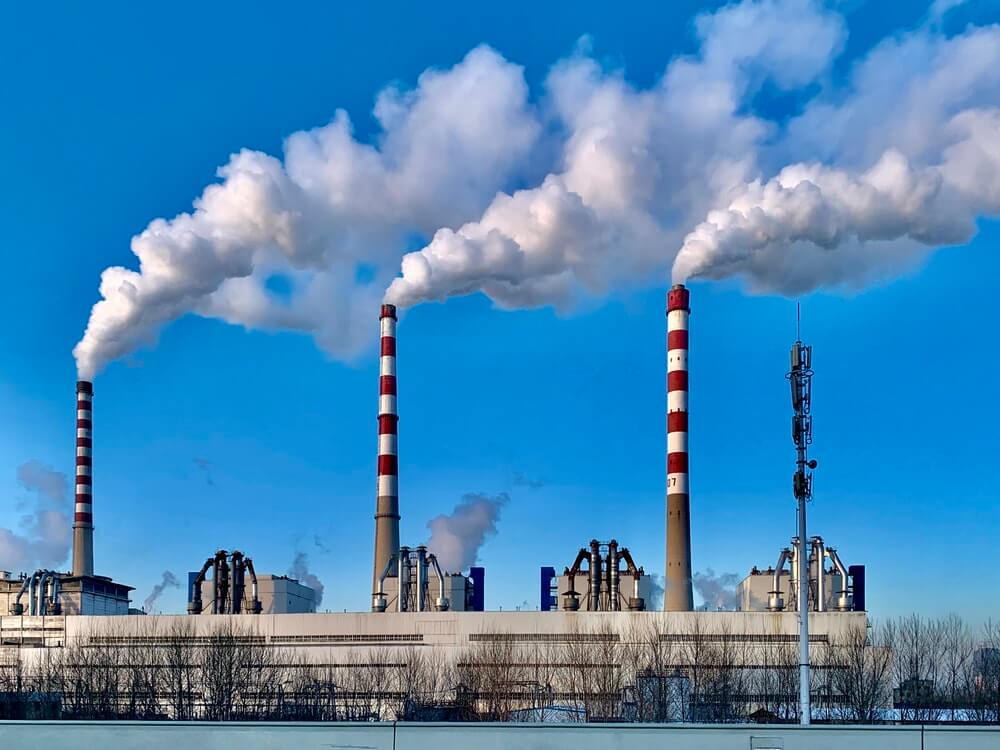
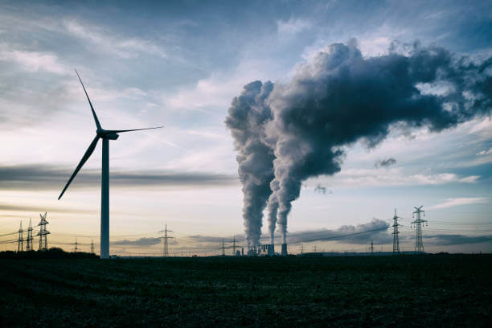
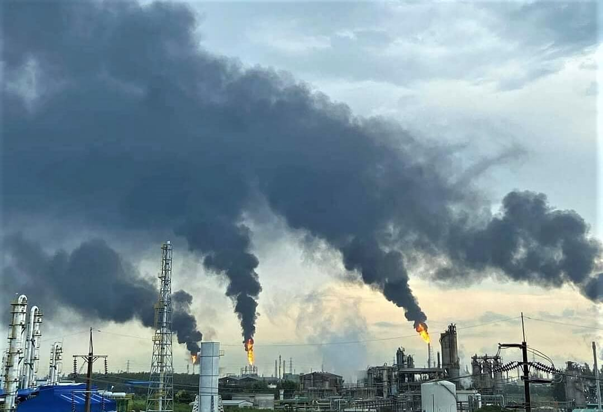

The Satanic Formula
All of a sudden both the individual and society become disinterested observers. A lot of information is generated on how to perceive and understand the problem.
Read More

S elf-interest becomes a very strong force when your life is threatened. Collectively, we enforce laws that protect the lives of all members of a community, individually we act with defensive force to protect ones own life. But what happens when life itself is threatened? All of a sudden both the individual and society become disinterested observers. A lot of information is generated on how to perceive and understand the problem. Things like Sustainability, Biodiversity and Conservation have become the discussion topics around the signs that signal the threat to life, but there is no effort at maintaining the activity and sustainability of life, in fact much of modern human endeavor seems to be directed at extinguishing it! Today we rapidly remove the conditions necessary for the continued existence of genetic, ecological and cultural information, as these are seen to be unimportant to the society of modern man. These losses have now reached critical proportions, the actions leading to such losses being vindicated by the human value system called “Consumerist, growth oriented society”. Using a theory called “Consumer sovereignty” where “whatever contributes to the satisfaction of the individual is decreed good and whatever detracts from the individual satisfaction is decreed bad”; the salesmen of the world set about the activity of creating desire.
So that, more and more resources were required to satisfy the individual preference, The individual preference being constantly redefined by the pecuniary actions of these same salesmen. The product of such actions has been to place an ever-increasing demand on all resources, be it renewable or non-renewable. As the values and ideals of the “Consumerist, growth oriented society extend to include more and more of humanity, there is a proportionate reduction in the ability of life to express itself on this planet. Can we, modern humanity, be really accused of stifling the force of life? The answer is yes and lies in our wholehearted accepatance of the Satanic Formula as the basis of human development without understanding or appreciating what this acceptance means. The Satanic formula is derived from the generalized formula for extracting energy from fossil fuel, which reads.

CH₄ + O₂ → CO₂ + H₂O + e This states that burning Hydrocarbons (fossil Fuels) using Oxygen gives us Carbon Dioxide, water and energy. It is this process that the entire industrial revolution was based upon it is this process that propels all the transport and industry of the ‘modern’ era. Hydrocarbons are made from the fossilization of organic compounds that once existed in the biosphere, it is made from living organisms that died and was buried underground where they are compressed into the rocks and reside for time periods measured in millions of years. This ‘fossil material has no contact with the living world. Over geologic time vast quantities of carbon sequestered by living forms became fossilized in this manner and removed from the living world. With the fossil carbon there also resides fossil hydrogen. And it is the burning of these fossil components using biologically generated oxygen that is currently pushing the threat to life ever closer. The reason why becomes clear when the generalized formula for Hydrocarbon combustion is looked at, in terms of its combustion products, armed with this knowledge, the threat to life becomes clearer. Thus the Satanic Formula is stated as: fCH₄ + bO₂ → nCO₂ + nH₂O + e Simply, it sates that burning fossil Hydrogen and fossil Carbon (Oil, Gas, Coal) using biologically created Oxygen, creates ‘new’ Carbon Dioxide and ‘new’ water vapor that never existed in the atmosphere before.

These ‘new’ gaseous inputs into the atmosphere accelerate the current trends of rampant global warming and climate change. But there is another feature about this formula that really makes it sinister and that is the fact the global Oxygen concentration is falling and the only thing that keeps the global concentration levels up is photosynthesis by leaves and plankton. The expansion of fossil based industry and farming at the expense of the forests and seas, not only destabilizes the atmosphere and accelerates global warming but it also removes the very basis for the expression of life by burning the biologically created Oxygen without paying for its replacement. Normally, the Oxygen volume is about 21.9% globally, this level of concentration is critical to all of humanity and negative health effects begin to be felt if it drops below 19% when thinking and attention becomes impaired, as the levels drop to around 16 % there is reduced coordination, decreased ability for strenuous work, at 14% Poor judgment, faulty coordination, abnormal fatigue upon exertion, emotional upset cardiac stress. 10-12% Very poor judgment and coordination, impaired respiration heart damage, nausea, fainting, death.
The current global concentration is about 21.9%, however this figure often dips to 19% over impacted areas and is down to 12%-17%. In cities with many trees such as in Alabama U.S.A it is 21.9% -19%. In cities with very low greenery and heavy urbanization such as Mexico City, it is 17% - 14%. As many will point out there is still a huge stock of Oxygen in the atmosphere. But the trends are disturbing. There has been a discernable drop in the Oxygen concentration following the Industrial revolution, this trend accelerating as the internal combustion engine competes with our lungs to access the global Oxygen stock. In a prophetic statement on the workings of the Satanic Formula, the 19th century English poet William Blake witnessed the emergence of what he termed “the dark Satanic Mills” of the industrial revolution where "all the Arts of Life they changed into the Arts of Death". This view is also echoed by the Indigenous tribe the Shwar who live in Amazonia and under whose feet lay oil deposits, which they refuse the extraction of, because they say “Oil represents the spirits of the dead to ask it for power, you sacrifice your children.” The reality of that saying is clear today with Global Warming and Oxygen loss. Could it be that the great industries and nations profiting from Oil, Coal and Gas at the expense of the sustainability of life, are the agents of Satan, of Iblis ? Could it be that those profiting from the burning of fossil fuels have a pact with the devil to destroy the expression of life? As a metaphor, the Satanic Formula is extremely distressing, but is it a metaphor? or more frighteningly, is it a statement of fact ?
All of a sudden both the individual and society become disinterested observers. A lot of information is generated on how to perceive and understand the problem.
Read More
We know that the mean temperature will rise, but the speed of that increase may be much more than the Intergovernmental Panel on Climate Change (IPCC) has computed.
Read More
Where Carbon Dioxide combine with water and powered by sunlight produces the solid organic matter (Carbohydrate) and the free molecular Oxygen.
Read More
Threat is being constantly amplified by the actions of the man. The actions of modern technological man have helped bring this threat very close to becoming real for us on this planet of Earth.
Read MoreEarth Restoration is dedicated to regenerating ecosystems, restoring biodiversity, and empowering communities to create a sustainable and thriving planet for future generations.
EarthRestoration, All rights reserved.
Designed By Digital Technology Partner Elzian Agro